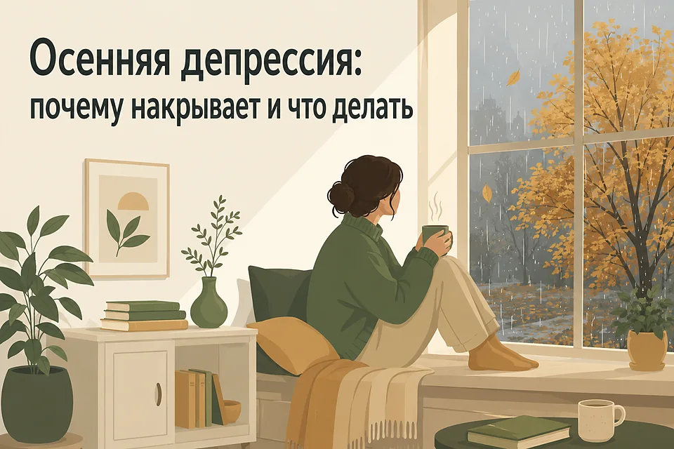
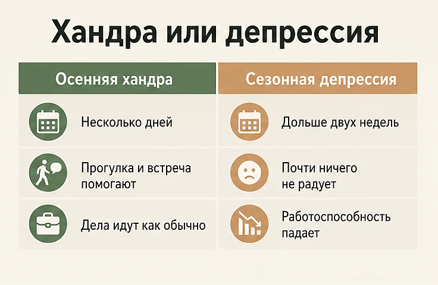
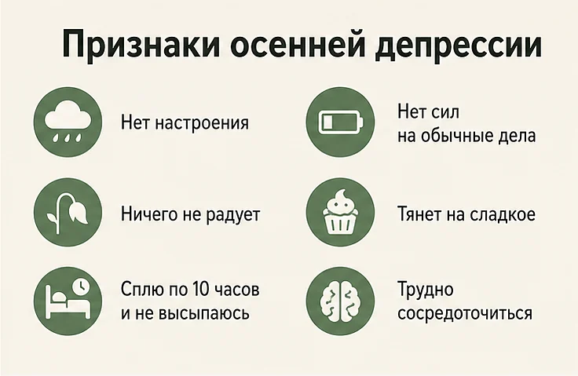
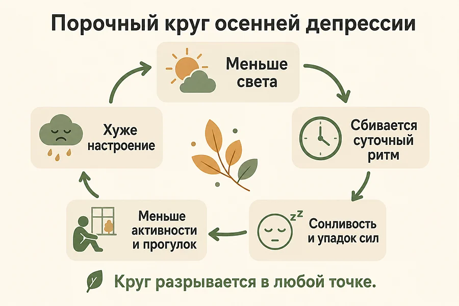
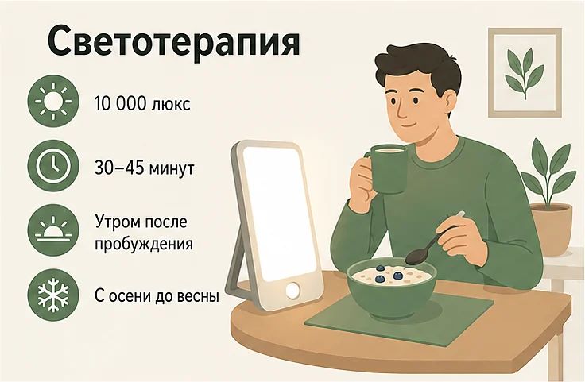
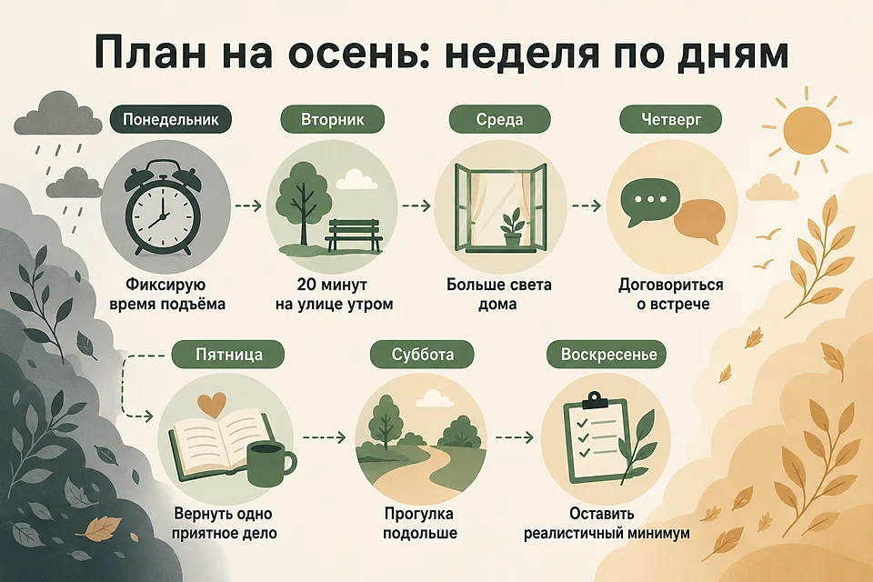
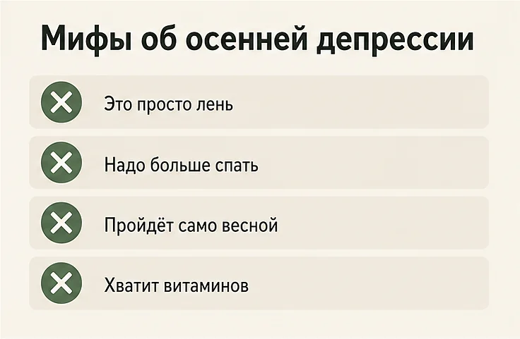

Главная → Блог → Осенняя депрессия
Осенняя депрессия: почему накрывает осенью и 8 способов справиться
Обновлено: 07.08.2026 · 25 минут чтения

Осенняя депрессия — это бытовое название сезонного аффективного расстройства (САР): депрессивных эпизодов, которые повторяются в одно и то же время года, начинаются по мере укорочения светового дня и отступают весной. Держится такое состояние практически ежедневно и неделями, а не пару тоскливых вечеров. Главное, что стоит знать сразу: дело не в характере и не в лени — на коротком дне действительно меняется работа систем, отвечающих за сон, энергию и настроение, и на это можно повлиять. Ниже — чем сезонная депрессия отличается от осенней хандры, почему осенью нет сил и хочется спать, что делать прямо сейчас и в какой момент нужен врач.
- Что такое осенняя депрессия и чем она отличается от хандры
- Признаки осенней депрессии: 9 симптомов
- Почему осенью портится настроение: свет, мелатонин, серотонин
- Почему осенью постоянно хочется спать
- Кто чаще сталкивается с сезонной депрессией
- Осенняя депрессия у женщин, мужчин, подростков и пожилых
- Сколько длится осенняя депрессия и когда станет легче
- Почему осенью не хочется жить
- Экспресс-проверка: хандра или сезонная депрессия
- Что делать при осенней депрессии: 8 шагов
- Светотерапия: как она работает и как ей пользоваться
- Витамин D: что известно на самом деле
- План на осень: чек-лист и неделя по дням
- Как пережить тёмные месяцы, когда нужно работать
- Мифы об осенней депрессии
- Что не помогает и что затягивает состояние
- Когда обращаться к врачу
- Частые вопросы
Что такое осенняя депрессия и чем она отличается от хандры
«Осенняя депрессия» — обиходное имя для сезонного аффективного расстройства (САР, в англоязычных источниках — seasonal affective disorder, SAD): это депрессивные эпизоды с сезонным характером, которые начинаются вместе с сокращением светового дня, держатся тёмную часть года и отступают весной. Отдельным диагнозом такое состояние обычно не считается: врач отмечает, что депрессивные эпизоды имеют сезонный характер.
Осенняя хандра — это другое. Она приходит волнами, живёт несколько дней, отзывается на прогулку, тёплый вечер, встречу с другом и почти не мешает делам. Сезонное расстройство так не отпускает: настроение и силы снижены практически ежедневно, интерес к любимым занятиям гаснет, а отдых не восстанавливает.
Люди часто описывают это состояние одинаково: «будто кто-то убавил яркость жизни». Не боль, не отчаяние — приглушённость, в которой всё стало на два тона темнее и на полшага тяжелее.
| Признак | Осенняя хандра | Сезонная (осенняя) депрессия |
|---|---|---|
| Длительность | Несколько дней, накатывает волнами | Больше двух недель, почти каждый день |
| Реакция на хорошее | Прогулка, встреча, солнце заметно улучшают состояние | Улучшение слабое и очень короткое |
| Интерес и удовольствие | Сохранены, просто меньше энергии | Гаснут: не радует даже то, что любили |
| Сон и аппетит | Немного больше спите, тянет на уютную еду | Сон по 10–12 часов без отдыха, сильная тяга к сладкому, вес растёт |
| Дела и работа | Справляетесь как обычно | Заметно падает работоспособность, копятся дела |
| Отношение к себе | «Скучная погода, хочется в плед» | «Я не справляюсь», «со мной что-то не так» |

Важно не спутать сезонную депрессию с обычным депрессивным эпизодом, который просто совпал с осенью. Разница — в повторяемости: при сезонном характере состояние приходит и уходит примерно в одни и те же месяцы несколько лет подряд. Если тяжесть началась впервые и связана с конкретными событиями — потерей, разрывом, перегрузкой на работе, — то ориентироваться стоит на общий разбор в статье о признаках депрессии.
Признаки осенней депрессии: 9 симптомов
Сезонная депрессия часто выглядит не как печаль, а как «сел аккумулятор». Человек не плачет — он спит, ест и всё равно не может собраться.
- Сниженное настроение большую часть дня. Чаще это не острая грусть, а серость, вялость и притупленные чувства.
- Потеря интереса. Хобби, встречи, музыка, планы перестают радовать — второй ключевой признак депрессии наравне с настроением.
- Постоянная сонливость. Сон по 9–12 часов, тяжёлый подъём, дневная разбитость. Это отличает сезонную депрессию от «классической», при которой чаще бывает бессонница и ранние пробуждения.
- Упадок сил. Простые дела — душ, готовка, ответ на сообщение — требуют непропорционально больших усилий.
- Тяга к сладкому и мучному. Углеводный «голод» и набор веса за осень-зиму — типичная черта именно сезонного типа.
- Трудности с концентрацией. Мысли вязкие, задачи тянутся дольше, растёт число мелких ошибок; часто добавляется прокрастинация.
- Отстранённость от людей. Не хочется никого видеть, отменяются встречи, растёт ощущение изоляции — как это раскручивается, разобрано в материале об одиночестве.
- Раздражительность и чувствительность к отказам. Мелочи задевают сильнее обычного, легче вспыхивают ссоры.
- Чувство вины и мысли о бессмысленности. «Я разленился», «я подвожу всех», «зачем всё это» — при депрессии такие мысли ощущаются как правда, а не как симптом.

Насторожиться стоит, когда держится хотя бы один из двух ключевых симптомов — сниженное настроение или потеря интереса — плюс несколько дополнительных, и всё это длится две недели и дольше. Отдельный тревожный сигнал — мысли о смерти в любой формулировке, даже мягкой вроде «лучше бы я не просыпался». Это повод обратиться за помощью сразу, не дожидаясь весны.
Почему осенью портится настроение: свет, мелатонин, серотонин
Главная причина осенней депрессии — не погода и не «нет отпуска», а нехватка дневного света. По описанию NHS, сезонное аффективное расстройство связывают со снижением количества дневного света зимой: из-за этого меняется работа мозга — в первую очередь уровни мелатонина и серотонина, которые влияют на настроение и на сон (циркадный ритм).
Мелатонин: организм переходит на режим зимовки
Мелатонин — гормон, который вырабатывается в темноте и сообщает телу, что пора спать. Когда рассвет наступает в девять утра, а темнеет в четыре дня, мелатонина становится больше и вырабатывается он дольше. Тело получает сигнал «ещё ночь» и включает энергосбережение: сонливость, замедленность, желание лежать. Отсюда ощущение, что вы «спите по десять часов и всё равно не выспались».
Серотонин: меньше света — хуже настроение
Серотонин участвует в регуляции настроения, и предполагается, что на коротком дне меняется активность связанных с ним систем мозга. Оговорка здесь важная: современная психиатрия давно не сводит депрессию к формуле «мало серотонина» — речь о более сложной перестройке, в которой участвуют свет, ритмы сна и активность нейромедиаторных систем. Но практическое следствие простое: вместе с этой перестройкой проседают настроение, мотивация и способность получать удовольствие. Тяга к сладкому и мучному, которая осенью усиливается почти у всех, — в том числе попытка организма быстро подтолкнуть эту систему доступным способом.
Циркадный ритм: внутренние часы сбиваются
Свет — главный ориентир для внутренних часов. Когда утром темно, «стартовый сигнал» приходит с опозданием, и весь суточный ритм сдвигается: вечером не спится, утром не встаётся, а середина дня проходит в тумане. Из-за этого сезонная депрессия часто тянет за собой проблемы со сном — если сон разрушился первым, поможет разбор в статье про бессонницу.
Витамин D и образ жизни
Осенью солнце стоит низко, кожа почти не производит витамин D, и его уровень падает. Национальный институт психического здоровья США отмечает, что дефицит витамина D может усугублять симптомы. К этому добавляется поведение: меньше прогулок, меньше движения, меньше встреч — то есть исчезает почти всё, что естественным образом поддерживало настроение летом. Получается замкнутый круг: мало сил → меньше активности → ещё меньше сил.
Как это раскручивается: порочный круг
Отдельные механизмы складываются в самоподдерживающуюся цепочку — и именно она превращает «осеннюю усталость» в состояние, которое тянется месяцами:
- Меньше света. День короче, утро тёмное, солнце низкое.
- Сбивается суточный ритм. Мелатонина больше и дольше, «стартовый сигнал» приходит с опозданием.
- Появляется сонливость и упадок сил. Сон удлиняется, но не восстанавливает.
- Падает активность. Реже прогулки, отменяются встречи, дела откладываются.
- Становится ещё меньше света и радости. Круг замыкается: меньше активности — меньше света и приятных событий — хуже настроение — ещё меньше сил.
Хорошая новость в том, что круг разрывается в любой точке. Именно поэтому утренняя прогулка и фиксированное время подъёма работают непропорционально своей простоте: они бьют сразу по двум звеньям цепочки.

Осенью вы не стали ленивее. Изменились условия, в которых работает ваш организм, — и то, что раньше держалось само, теперь нужно поддерживать осознанно.
Почему осенью постоянно хочется спать
Осенняя сонливость — самый частый и самый недооценённый симптом: человек спит по десять часов, встаёт разбитым и считает, что просто «не выспался». Причин обычно три, и они складываются.
- Мелатонина больше. Он вырабатывается в темноте, а темноты осенью в разы больше — тело получает сигнал «ещё ночь» и держит режим энергосбережения весь день.
- Ритм сдвинулся. Когда рассвет приходит к девяти, внутренние часы отстают: вечером не спится, утром не встаётся, и хроническое рассогласование ощущается как постоянная сонливость.
- Сон стал длиннее, но хуже. При сезонной депрессии люди часто спят дольше обычного, но сон поверхностный и не даёт отдыха, поэтому «доспать» не получается в принципе.
Что с этим делать: не удлинять сон дальше, а наоборот, зафиксировать подъём и вытащить себя к свету в первый час после пробуждения. Звучит контринтуитивно, но лишние часы в кровати обычно усиливают разбитость: ритм сдвигается ещё сильнее, а светлое время суток проходит мимо. Если же сонливость сочетается с храпом, паузами дыхания во сне, выраженной бледностью или другими телесными жалобами — стоит сдать анализы и исключить, например, дефицит железа, проблемы со щитовидной железой и нарушения дыхания во сне.
Кто чаще сталкивается с сезонной депрессией
Сезонная депрессия распределена неравномерно. По данным NIMH, она чаще встречается:
- у женщин — чаще, чем у мужчин;
- у жителей северных широт — чем короче зимний день, тем выше частота: в северных регионах сезонные эпизоды заметно распространённее, чем в южных;
- у молодых взрослых — состояние обычно впервые проявляется в молодом возрасте;
- у людей с депрессией или биполярным расстройством II типа в анамнезе;
- у людей с тревожными и паническими расстройствами, СДВГ, расстройствами пищевого поведения;
- при семейной истории сезонной депрессии или других психических расстройств.
Отдельно стоит сказать про «летний тип»: у части людей всё наоборот — тяжело именно в жару и на длинном дне, а зимой становится легче. Такой вариант встречается реже зимнего и проявляется скорее бессонницей, тревогой, потерей аппетита и снижением веса.
Как это выглядит. Марина, 31 год. Каждый сентябрь у неё «просто много работы»: она перестаёт ходить в бассейн, отменяет встречи, ложится в час ночи и встаёт по будильнику в темноте. К ноябрю она спит по десять часов, ест шоколад за рабочим столом и считает себя разленившейся. На третий год Марина замечает закономерность — тяжело всегда с октября по март — и впервые обращается за помощью не с «ленью», а с сезонным состоянием.
Осенняя депрессия у женщин, мужчин, подростков и пожилых
Состояние одно, но выглядит по-разному — и от этого зависит, что именно замечают окружающие и с чем человек приходит к врачу.
Осенняя депрессия у женщин
По данным NIMH, сезонное расстройство у женщин встречается заметно чаще, чем у мужчин. Проявляется оно обычно «классически»: сонливость, тяга к сладкому, слёзы без повода, повышенная чувствительность к отказам и ощущение вины за то, что «не справляюсь». Отдельная нагрузка — сезон совпадает с началом учебного года у детей, авралом на работе и общим ростом бытовых задач, поэтому упадок сил легко списывают на усталость.
Как это выглядит. Оля, 29 лет, в декрете с полуторагодовалым сыном. С ноября она не может встать раньше ребёнка, ест печенье вместо обеда и плачет от разлитого чая. Мужу говорит: «Я просто устала». К январю выясняется, что то же самое было и прошлой осенью, и позапрошлой, — а летом сил хватало и на прогулки, и на подруг.
Осенняя депрессия у мужчин
У мужчин сезонное ухудшение чаще выглядит не как грусть, а как раздражительность, вспышки злости, уход в работу, молчаливость и увеличение количества алкоголя по вечерам. Слово «депрессия» при этом не звучит вообще: человек скорее скажет «всё бесит» или «завал на работе». Из-за этого до специалиста мужчины доходят реже и позже, а состояние успевает разрушить отношения и рабочие связи.
Осенняя депрессия у подростков и студентов
Начало учебного года само по себе даёт нагрузку, и сезонное снижение настроения на её фоне легко принять за лень. Типичная картина: подросток спит на уроках, стал раздражительным, не выходит из комнаты, успеваемость поехала вниз. У студентов добавляется хаотичный режим — поздние подъёмы, ночная учёба и почти полное отсутствие дневного света зимой.
Как это выглядит. Артём, 20 лет, второй курс. С октября он просыпается к первой паре в темноте, к декабрю перестаёт ходить на утренние занятия совсем, спит до обеда и учится ночью. Он уверен, что просто «расслабился и обленился». На деле последний раз он видел дневной свет неделю назад — и это не метафора, а расписание.
После 40 лет и в пожилом возрасте
С возрастом сезонное ухудшение чаще маскируется под телесные жалобы: боли, тяжесть, скачки давления, «возраст сказывается». Добавляются реальные факторы — меньше выходов из дома, сократившийся круг общения, хронические болезни и принимаемые лекарства. Здесь особенно важно не списывать всё на годы: сниженное настроение и потеря интереса не являются нормальной частью старения, а осенью к ним стоит отнестись так же серьёзно, как в тридцать.
Осенью после отпуска
Отдельный частый сценарий — резкое падение настроения в сентябре, сразу после отпуска. Здесь складывается сразу несколько вещей: откат после спада напряжения, возвращение в рабочий ритм, потеря длинного светового дня и контраст с солнечной поездкой. Обычно такой спад выравнивается за одну-две недели. Если он не проходит и к октябрю только усиливается — речь уже не о «синдроме после отпуска», а о сезонном ухудшении, и работать с ним нужно как с ним.
Сколько длится осенняя депрессия и когда станет легче
Типичный сезонный цикл выглядит так: начало — октябрь-ноябрь, пик — декабрь-январь, отступление — март-апрель. То есть тяжёлая часть занимает около четырёх-пяти месяцев и заканчивается вместе с удлинением дня. У людей, которые переживают это не первый год, сроки обычно повторяются почти в одни и те же недели.
Из этого следует важный практический вывод. Ждать весны «на терпении» — плохая стратегия: это четыре месяца жизни, отношений и работы, которые проходят вполсилы. При этом меры, о которых речь ниже, дают заметный эффект гораздо быстрее — обычно первые сдвиги видны через одну-две недели регулярности. А если состояние тяжёлое, ухудшается или сопровождается мыслями о смерти, ориентироваться на календарь нельзя вообще: нужна помощь сейчас.
Почему осенью не хочется жить
Мысли вроде «зачем всё это», «я устал жить», «лучше бы меня не было» — это не правда о вашей жизни, а симптом состояния, в котором вы сейчас находитесь. Осенью они появляются чаще по понятной причине: сниженное настроение и упадок сил накладываются на темноту, изоляцию и ощущение, что впереди ещё несколько беспросветных месяцев. Мозг в этом состоянии перестаёт видеть варианты — и любая тяжесть кажется вечной.
Важно понимать две вещи. Первая: такие мысли бывают у очень многих людей в депрессии, и они не делают вас сумасшедшим или неблагодарным. Вторая: они меняются вместе с состоянием — то, что сейчас выглядит как окончательный вывод о жизни, через несколько недель лечения обычно выглядит иначе.
Что делать, если эти мысли уже появились:
- Не оставайтесь с ними наедине. Скажите хотя бы одному человеку — близкому, врачу, дежурному психологу. Проговорённая вслух мысль почти всегда теряет часть власти.
- Уберите из доступа то, чем можно причинить себе вред, и попросите близкого побыть рядом или на связи.
- Отложите решения. В таком состоянии не принимают решений о жизни, работе и отношениях — сначала лечат состояние.
- Обратитесь за помощью сейчас, а не «когда станет совсем плохо». При угрозе жизни — 112; круглосуточная психологическая помощь — +7 (495) 989-50-50 (ЦЭПП МЧС России).
Если такие мысли есть у вашего близкого — не бойтесь спросить прямо: «Ты думаешь о том, чтобы не жить?». Вопрос не подталкивает к действию, а даёт человеку возможность сказать правду и перестать быть с этим одному.
Экспресс-проверка: хандра или сезонная депрессия
Отметьте пункты, которые описывают ваши последние две недели. Это не диагноз, а способ понять, пора ли действовать всерьёз.
- Настроение снижено большую часть дня почти каждый день.
- То, что раньше радовало, почти не вызывает отклика.
- Сплю заметно дольше обычного и всё равно не высыпаюсь.
- Постоянно тянет на сладкое и мучное, вес пополз вверх.
- Сил не хватает на обычные дела: уборку, готовку, переписку.
- Труднее сосредоточиться, задачи тянутся дольше обычного.
- Отменяю встречи и почти ни с кем не общаюсь.
- Стал(а) раздражительнее, мелочи задевают сильнее.
- Есть ощущение вины, что «разленился» и всех подвожу.
- Похожее состояние повторяется каждую осень несколько лет подряд.
Как читать результат. Один-три пункта — скорее осенняя хандра: помогут свет, режим и активность из списка ниже. Четыре-шесть пунктов дольше двух недель — состояние уже влияет на жизнь, меры нужны системные, а разговор со специалистом будет уместен. Семь и больше — не откладывайте обращение к врачу или психологу, особенно если есть последний пункт про повторяемость. И отдельно: любые мысли о нежелании жить — повод обратиться за помощью сразу, независимо от числа галочек.
Что делать при осенней депрессии: 8 шагов
Порядок здесь не случайный: первые три шага дают телу то, чего ему не хватает физически, остальные возвращают жизни содержание. Начинать лучше не со всех сразу, а с одного-двух — при упадке сил длинный список сам становится источником вины.
- Ловите утренний свет в первый час после пробуждения. Даже в пасмурный день на улице в разы светлее, чем в комнате. Достаточно 20–30 минут: пройти часть пути пешком, выйти с кофе на балкон, дойти до магазина. Это главный сигнал внутренним часам «день начался» — и самое дешёвое, что вообще можно сделать при сезонной депрессии.
- Держите один и тот же режим сна. Ложиться и вставать в одно время важнее, чем «отсыпаться» в выходные: сдвиг подъёма на три часа в субботу бьёт по ритму так же, как перелёт через часовые пояса. И не удлиняйте сон сверх нормы — при сезонной депрессии лишние часы в кровати обычно усиливают разбитость, а не снимают её.
- Добавьте движение, желательно на улице. 20–30 минут ходьбы в светлое время суток работают сразу по двум фронтам: свет плюс физическая активность. Здесь важна не интенсивность, а регулярность — короткая ежедневная прогулка полезнее одной героической тренировки раз в две недели.
- Сделайте дом светлее. Отодвиньте рабочее место к окну, поднимите шторы, вымойте стёкла, замените тусклые лампы на яркие с холодным светом в рабочей зоне и оставьте тёплый приглушённый свет на вечер. Это звучит мелко, но именно освещённость — та переменная, которая осенью изменилась сильнее всего.
- Не сокращайте общение, даже когда не хочется. Изоляция при сезонной депрессии нарастает незаметно: одна отменённая встреча превращается в три месяца без людей. Договоритесь о минимуме — одна живая встреча в неделю — и относитесь к ней как к лечению, а не как к развлечению «по настроению».
- Возвращайте по одному приятному делу в день. При депрессии интерес возвращается после действия, а не до него, поэтому ждать желания бесполезно. Выберите одно маленькое дело, которое радовало раньше, и сделайте его, не проверяя, «хочется ли»: пятнадцать минут музыки, глава книги, разговор, готовка.
- Уменьшайте шаг, а не требования к себе. Если не получается тренировка — оденьтесь и выйдите за дверь. Не получается уборка — уберите одну полку. Осенью нормально снизить темп: список дел на тёмные месяцы честнее делать короче, чем летний, иначе к упадку сил добавится ежедневное чувство провала.
- Следите за сладким и алкоголем. Углеводный «догон» даёт короткий подъём и последующий спад, а алкоголь дополнительно рушит сон и усиливает подавленность на следующий день. Полный запрет обычно не работает — работает план: тёплый обед вместо булки, сладкое не вместо еды, а после, и трезвые вечера в будни.
Осенью тяжелее всего вечером, когда рано темнеет и рассказать о состоянии некому. Если тяжело говорить об этом с близкими или ждать записи к специалисту, можно начать с анонимного разговора — просто чтобы сформулировать, что с вами происходит.
Начать разговорСветотерапия: как она работает и как ей пользоваться
Светотерапия — это использование яркой лампы, имитирующей дневной свет, чтобы компенсировать нехватку освещённости зимой. NHS описывает её как один из вариантов помощи при сезонном аффективном расстройстве и одновременно отмечает: на NHS её обычно не назначают, потому что доказательств эффективности пока недостаточно, — при этом многие люди сообщают об улучшении симптомов.
Из этой оговорки не стоит делать вывод «значит, лампа бесполезна». Национальный институт психического здоровья США формулирует иначе: с 1980-х годов светотерапия остаётся одним из основных методов лечения зимнего типа сезонного расстройства. То есть метод давно в обиходе и входит в стандартный набор помощи — просто качество доказательной базы по нему оценивают сдержаннее, чем по психотерапии и лекарствам.
Как это выглядит на практике, описывает NIMH: обычно применяют лампу яркостью 10 000 люкс по 30–45 минут в день, первым делом с утра, с осени до весны. Лампа стоит сбоку или перед вами на расстоянии вытянутой руки, смотреть прямо на неё не нужно — можно завтракать, читать или работать.
| Параметр | Как обычно делают |
|---|---|
| Яркость | 10 000 люкс (у более слабых ламп сеанс длиннее) |
| Время суток | Утро, вскоре после пробуждения |
| Длительность | 30–45 минут ежедневно |
| Сезон | С осени до весны, пока день короткий |
| Что не подходит | Солярий, ультрафиолетовые лампы, обычная люстра |

О чём важно помнить. Лампа должна быть предназначена именно для светотерапии и не давать ультрафиолета. Вечерние сеансы могут сдвинуть сон и добавить бессонницы. И есть состояния, при которых начинать самостоятельно не стоит: биполярное расстройство (яркий свет может спровоцировать подъём настроения до маниакального), болезни глаз и сетчатки, приём лекарств, повышающих светочувствительность. В этих случаях сначала — консультация врача.
И главное: светотерапия не заменяет остального. Она хорошо ложится поверх режима, движения и общения, но не работает вместо них.
Витамин D: что известно на самом деле
Уровень витамина D осенью и зимой действительно падает, и его дефицит может усиливать симптомы — но исследования о том, помогает ли приём добавок именно при сезонной депрессии, дают противоречивые результаты. Так эту тему описывает NIMH: в одних работах эффект сопоставим со светотерапией, в других его не находят вовсе. Это честная формулировка, которую редко услышишь в рекламе БАДов.
Ключевая мысль: речь идёт прежде всего о восполнении подтверждённого дефицита, а не о приёме витамина D «ради настроения». Если анализ показывает нормальный уровень, оснований пить добавки в расчёте на то, что осенью станет легче, у вас нет.
Что из этого следует практически:
- витамин D — не антидепрессант и не лечение депрессии;
- проверять уровень и назначать дозу должен врач, по анализу, а не по совету из интернета;
- самостоятельно принимать высокие дозы «на всякий случай» не стоит: витамин D жирорастворим и накапливается;
- если дефицит подтверждён, восполнить его разумно — но ждать от этого исчезновения сезонной депрессии не надо.
То же касается других популярных осенних средств: чем громче обещание «поднять настроение таблеткой», тем осторожнее стоит к нему относиться.
План на осень: чек-лист и неделя по дням
Общие советы плохо переживают контакт с ноябрьским утром. Ниже — конкретный минимум на каждый день и способ начать без перегрузки.
Ежедневный минимум:
- Подъём в одно и то же время (±30 минут, включая выходные).
- 20–30 минут на улице в светлое время суток.
- Одно приятное дело — даже на пятнадцать минут.
- Один контакт с человеком: звонок, сообщение, разговор.
- Тёплая полноценная еда, а не «перекус сладким вместо обеда».
- Экран убран за час до сна, вечером — приглушённый тёплый свет.
Если начинать всё сразу тяжело, разложите на неделю — по одной новой привычке в день, не отменяя предыдущие.
| День | Что добавляем |
|---|---|
| Понедельник | Фиксируем время подъёма и заводим будильник на всю неделю |
| Вторник | Утренние 20 минут на улице — пешком часть пути |
| Среда | Наводим свет дома: стол к окну, яркая лампа в рабочей зоне |
| Четверг | Договариваемся о встрече или звонке на выходные |
| Пятница | Возвращаем одно приятное дело, которое ушло из жизни осенью |
| Суббота | Движение подольше: прогулка на час или тренировка |
| Воскресенье | Смотрим, что из этого выполнялось, и оставляем реалистичный минимум |

Через две недели такого режима имеет смысл честно оценить динамику. Стало полегче — продолжайте до весны. Ничего не изменилось или стало хуже — это не ваш провал, а сигнал, что нужна помощь специалиста.
Как пережить тёмные месяцы, когда нужно работать
Сезонная депрессия неудобна тем, что совпадает с самым нагруженным периодом: учебный год, планы, отчётность. Несколько вещей, которые помогают не сорваться.
- Планируйте сложное на первую половину дня. Осенью пик работоспособности обычно смещается на утро, а после четырёх, когда за окном темно, продуктивность падает у большинства.
- Разбейте день перерывами со светом. Пятиминутный выход на улицу в обед стоит дороже, чем ещё одна чашка кофе за столом.
- Снизьте планку на тёмные месяцы сознательно. Не «сделаю как летом, но через силу», а «делаю главное, остальное подождёт». Это профилактика выгорания, а не лень.
- Не воюйте с собой в семь утра. Если подъём в темноте даётся тяжело — помогает будильник-рассвет или просто включённый яркий свет сразу после пробуждения.
- Скажите близким, что с вами происходит. Фраза «мне сейчас тяжелее обычного, это сезонное» снимает половину недоразумений — и с партнёром, и с коллегами.
Мифы об осенней депрессии
Миф 1. «Это просто лень и нытьё». Сезонные колебания настроения связаны с реальными изменениями в работе организма на коротком дне. Обвинять себя в лени — значит добавить к упадку сил ещё и чувство вины, от которого сил точно не прибавится.
Миф 2. «Надо просто больше спать». При сезонной депрессии сон и так удлиняется, а разбитость остаётся. Лишние часы в кровати чаще ухудшают состояние: сдвигается ритм, теряется утренний свет, растёт ощущение выпавшего дня.
Миф 3. «Пройдёт само весной, надо потерпеть». Действительно, чаще всего к весне отпускает. Но это четыре-пять месяцев жизни вполсилы, а при тяжёлом состоянии терпение опасно — сезонная депрессия остаётся депрессией.
Миф 4. «Достаточно витаминов и БАДов». Данные о добавках при сезонной депрессии противоречивы, и ни один из них не заменяет свет, движение, режим и — при необходимости — лечение.
Миф 5. «Осенью всем плохо, это норма». Небольшой спад энергии осенью — да, обычное дело. Но состояние, которое держится неделями и мешает работать и общаться, нормой не является, сколько бы людей вокруг ни говорили «у всех так».

Что не помогает и что затягивает состояние
- Алкоголь по вечерам. Даёт короткое расслабление и портит сон, а на следующий день усиливает подавленность и тревогу.
- «Отсыпаться» в выходные до обеда. Сбивает ритм сильнее, чем помогает, и съедает единственные светлые часы субботы.
- Отмена всех планов «до тех пор, пока не появятся силы». Силы при депрессии приходят после действия, поэтому пустой календарь их не приближает, а отдаляет.
- Бесконечная лента в телефоне вместо вечера. Свет экрана сбивает засыпание, а сравнение себя с чужими яркими картинками добавляет чувства, что «у всех жизнь, а у меня осень».
- Ставить себе летние нормативы. Требовать от ноябрьского себя июльской продуктивности — прямой путь к ежедневному чувству провала.
- Ждать «подходящего момента», чтобы обратиться за помощью. Обычно он не наступает — состояние либо тянется до весны, либо ухудшается.
Когда обращаться к врачу
Есть ситуации, в которых самопомощь — не лучший план. Обратитесь к врачу или психологу, если:
- сниженное настроение или потеря интереса держатся больше двух недель;
- состояние заметно мешает работать, учиться, заботиться о себе и близких;
- сезонное ухудшение повторяется несколько лет подряд;
- вы отказались почти от всех контактов и дел;
- появились мысли о смерти или нежелание жить — это повод обратиться немедленно;
- вы пытаетесь справляться алкоголем или другими веществами;
- две недели режима, света и движения не дали никакого сдвига.
Как обычно помогают: психотерапия — при сезонной депрессии применяют когнитивно-поведенческую терапию, адаптированную под сезонное расстройство (NIMH описывает формат CBT-SAD как две групповые сессии в неделю в течение шести недель); светотерапия; антидепрессанты — по назначению врача, их эффект оценивают примерно через четыре-восемь недель. Названий и доз препаратов вы здесь не найдёте намеренно: подбирает их только врач, с учётом всей вашей ситуации, а самостоятельный приём и резкая отмена опасны.
Если состояние повторяется каждый год, врачи иногда предлагают начинать меры заранее — в конце лета или начале осени, до появления симптомов. Профилактика такого рода обсуждается со специалистом индивидуально.
Частые вопросы
Осенняя депрессия — это настоящий диагноз или просто плохое настроение?
«Осенняя депрессия» — это бытовое название сезонного аффективного расстройства, и такое состояние действительно существует: врачи описывают его как депрессивные эпизоды, которые повторяются в одно и то же время года, чаще всего осенью и зимой. Отдельным диагнозом в классификациях оно обычно не считается — его отмечают как сезонный характер депрессивных эпизодов. Но если снижение настроения держится дольше двух недель и мешает жить, это не «просто осень», а состояние, с которым работают, и работать с ним стоит.
Сколько длится осенняя депрессия?
Обычно состояние начинается в октябре или ноябре, достигает пика в декабре и январе и отступает в марте или апреле, когда день заметно удлиняется. То есть тяжёлый период длится около четырёх-пяти месяцев и заканчивается сам, вместе с возвращением света. Это не повод терпеть: меры по режиму и свету дают эффект уже через одну-две недели, а если состояние тяжёлое, ждать весны опасно.
Сколько длится осенняя хандра?
Обычная осенняя хандра держится от нескольких дней до одной-двух недель и заметно отступает после прогулки, солнечного дня, отдыха или встречи с близкими. Она не мешает работать и не гасит интерес к тому, что вы любите. Если тоска и упадок сил тянутся третью неделю подряд и справляться с обычными делами стало труднее, это уже не хандра, и действовать стоит по плану для сезонной депрессии.
Может ли осенняя депрессия пройти сама?
Чаще всего сезонное ухудшение действительно отступает само весной, когда день удлиняется. Но это означает несколько месяцев жизни вполсилы, а каждый эпизод, прожитый без помощи, повышает вероятность, что следующей осенью повторится то же самое. При лёгком состоянии обычно хватает режима, света и движения, а если оно мешает работать и общаться или сопровождается мыслями о смерти, ждать весны нельзя.
Почему осенью постоянно хочется спать и тянет на сладкое?
При сезонной депрессии организм ведёт себя так, будто готовится к зимовке: становится больше мелатонина, из-за чего сонливость приходит раньше и не проходит после сна. Тяга к сладкому и мучному — попытка быстро поднять уровень серотонина, который на коротком дне снижается. Именно поэтому осенняя депрессия часто выглядит не как грусть, а как «сплю по десять часов, ем булки и всё равно нет сил».
Помогает ли лампа для светотерапии и как ей пользоваться?
Многие люди отмечают улучшение от светотерапии, хотя NHS указывает, что доказательств её эффективности пока недостаточно. По описанию Национального института психического здоровья США, обычно используют лампу яркостью 10 000 люкс по 30–45 минут утром, сразу после пробуждения, с осени до весны. Лампа должна быть с фильтром ультрафиолета и предназначена именно для светотерапии — солярий и обычная лампочка не подходят. При биполярном расстройстве, болезнях глаз и приёме светочувствительных лекарств сначала нужно посоветоваться с врачом.
Нужно ли пить витамин D осенью и зимой?
Осенью и зимой уровень витамина D действительно падает, и его дефицит может усиливать симптомы, но исследования о том, помогает ли приём добавок именно от сезонной депрессии, дают противоречивые результаты. Это значит, что витамин D — не лечение депрессии, а возможное дополнение. Дозу и необходимость приёма определяет врач по анализу, самостоятельно назначать себе высокие дозы не стоит.
Как отличить осеннюю хандру от депрессии?
Хандра приходит волнами, длится несколько дней, отступает от прогулки, встречи или хорошей новости и почти не мешает делам. Сезонная депрессия держится большую часть дня почти каждый день дольше двух недель, гасит интерес к тому, что раньше радовало, ломает сон и аппетит и заметно снижает работоспособность. Простой ориентир: если вы стали хуже справляться с обычными делами и это тянется третью неделю, речь уже не о хандре.
Помогает ли поездка в тёплую страну при осенней депрессии?
Неделя солнца обычно улучшает состояние, потому что даёт то, чего не хватает, — яркий свет и активность. Но эффект держится недолго: после возвращения в темноту симптомы чаще всего возвращаются в течение одной-двух недель. Поэтому отпуск работает как передышка, а не как лечение — устойчивый результат дают ежедневный утренний свет, режим сна и движение.
Что делать, если осенняя депрессия повторяется каждый год?
Если состояние возвращается несколько лет подряд, самое эффективное — начинать меры заранее, в конце лета или в начале осени, не дожидаясь ухудшения. Заранее восстановите режим сна, запланируйте утренние прогулки, движение и встречи на тёмные месяцы, а при выраженных эпизодах обсудите с врачом профилактику. Повторяющиеся сезонные эпизоды — прямое показание обратиться к специалисту, а не проходить это в одиночку каждый год.
Бывает ли осенняя депрессия у подростков?
Да, сезонное снижение настроения встречается и у подростков, и чаще всего выглядит как раздражительность, сонливость на уроках, падение успеваемости и нежелание выходить из комнаты. Родителям это легко принять за лень или «характер», особенно когда всё началось вместе с учебным годом. Если изменения держатся больше двух недель и ребёнок перестал радоваться тому, что любил, нужна консультация специалиста, а разговоры о нежелании жить — повод действовать немедленно.
Может ли осенняя депрессия быть без грусти — только усталость?
Да, и это очень частый вариант. У многих людей сезонная депрессия проявляется не слезами, а тяжестью в теле, сонливостью, безразличием и ощущением, что ничего не хочется, — грусти при этом может не быть совсем. Потеря интереса и удовольствия — такой же ключевой признак депрессии, как сниженное настроение, поэтому отсутствие слёз не значит, что всё в порядке.
Если осенью не хватает человека, которому можно рассказать, как всё на самом деле, — ИИ-психолог доступен круглосуточно, анонимно и без записи. Это не замена лечению, но хорошая опора в тёмные месяцы.
Поговорить прямо сейчасЧитать также
- Депрессия: 10 признаков, что делать и когда идти к врачу — если состояние не привязано к сезону и держится дольше.
- Апатия: почему нет сил и ничего не хочется — и что делать — если главное сейчас это безразличие и пустота.
- Бессонница при тревоге: почему не спится и что делать — если сбился сон и вечерами не получается уснуть.
- Эмоциональное выгорание: 5 стадий, признаки и как восстановиться — если тяжесть привязана в первую очередь к работе.
- Прокрастинация: почему вы откладываете дела и 7 способов перестать — если осенью всё стало откладываться до последнего.
- Как справиться с одиночеством: 8 шагов, когда рядом никого нет — если из-за темноты и усталости почти исчезло общение.
- Как справиться с тревогой: 8 техник, которые реально помогают — тревога и сниженное настроение часто идут вместе.
Материал подготовлен командой AI Therapist и основан на доказательных подходах к работе со сниженным настроением — когнитивно-поведенческой терапии (КПТ), поведенческой активации и терапии принятия и ответственности (ACT). Статья носит просветительский характер, не является медицинской рекомендацией и не заменяет диагностику и лечение у врача.
Источники: NHS — Seasonal affective disorder (SAD), National Institute of Mental Health — Seasonal Affective Disorder.
Кто отвечает за содержание сайта и по каким правилам мы готовим материалы — на странице о проекте.